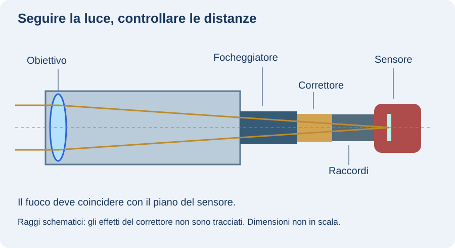

1. L’occhio non è una fotocamera
Sotto un cielo buio, una debole nebulosità può comparire soltanto con attenzione. In una fotografia la stessa regione mostra strutture e colori evidenti. Non significa che uno dei due risultati sia falso: occhio e sensore raccolgono e organizzano l’informazione in modi differenti. La fotografia può integrare luce per un tempo molto maggiore e combinare molte riprese; la visione visuale restituisce una percezione immediata, legata all’adattamento e al contrasto.
NASA, ESA, J. Dalcanton (University of Washington, USA), B. F. Williams (University of Washington, USA), L. C. Johnson (University of Washington, USA), the PHAT team, and R. Gendler. · CC BY 4.0 · Licenza e condizioni
Un’immagine astronomica può essere realizzata in bande diverse dal visibile o assegnare colori a filtri selezionati. Per interpretarla bisogna leggere la descrizione, non soltanto riconoscere una tonalità. Anche nelle riprese amatoriali, bilanciamento e trasformazioni del contrasto modificano la presentazione. “Più rosso” non dimostra automaticamente che l’oggetto sia cambiato: potresti aver cambiato la risposta del sistema o il modo di mostrare i dati.
La camera registra valori che devono essere messi in relazione con tempo di posa, risposta del sensore, filtri e condizioni. Conservare gli originali permette di tornare alla misura prima delle trasformazioni. Un JPEG pronto può essere utile come documento di una scena, ma offre meno margine rispetto a dati grezzi adatti al processo scelto. Il formato non garantisce qualità: deve essere coerente con ciò che vuoi misurare e con il software che userai.
Parti da una domanda osservativa: vuoi registrare la forma della Luna, confrontare una stella, mostrare un campo ampio o evidenziare una nebulosità? Ogni scopo richiede una scala e un processo. Copiare una lista di impostazioni senza questa domanda può portare a dati inutili anche se i numeri sembrano professionali.
Riferimenti: ESO · Rivelatori astronomici · NASA/GSFC · Introduzione al formato FITS
2. Il limite della catena e il significato del dato
L’atmosfera modifica la luce prima che raggiunga l’ottica. L’ottica la distribuisce sul sensore; il movimento della postazione può spostarne la direzione durante la posa; il sensore e l’elettronica traducono la raccolta in numeri. Un errore in uno di questi passaggi non è necessariamente riparabile dopo. Se il nucleo di una stella è saturato, aumentare il contrasto non ricostruisce i conteggi perduti. Se la stella è allungata da una deriva, il tempo raccolto non è equivalente a una posa perfettamente seguita.
La parola rumore descrive fluttuazioni e incertezze, non un materiale da togliere come polvere. L’arrivo dei fotoni ha una componente statistica: anche con un segnale medio stabile, i conteggi variano. L’elettronica introduce altri contributi. La corrente di buio produce un segnale legato al sensore e alla temperatura, con proprie fluttuazioni. Una struttura ripetibile e una variazione casuale richiedono ragionamenti diversi.
Una buona calibrazione può correggere contributi sistematici, ma anche i riferimenti di calibrazione sono misure con incertezza. Per questo un master costruito da più riprese è preferibile a un riferimento molto rumoroso, quando la procedura lo richiede. Non pensare al dark come a una fotografia perfetta del rumore da sottrarre pixel per pixel: un’altra esposizione non contiene la stessa realizzazione casuale delle fluttuazioni del light.
Qualità e quantità devono collaborare. Raccogliere molte pose sfocate non crea il dettaglio di una serie nitida. Una posa lunga può diventare inefficiente se il fondo satura o se molti fotogrammi vengono scartati. Controlla prima un campione rappresentativo: fuoco, stelle nei bordi, livello del fondo, tracciamento e contesto del bersaglio. Il tempo dedicato a questa verifica può conservare una parte importante della sessione.
Riferimenti: ESO · Rivelatori astronomici · Siril · Calibrazione
3. Smartphone: cominciare con un bersaglio controllabile
Il telefono è disponibile quando compare una bella Luna o quando una prima osservazione ti sorprende. Può registrare una scena senza richiedere subito una postazione complessa, ma la sua automatizzazione rende importante capire che cosa stia facendo. Esposizione, messa a fuoco, riduzione del rumore e combinazioni interne possono essere gestite dal sistema. Un’immagine pronta non descrive automaticamente tutti quei passaggi.
Comincia dalla Luna, da una congiunzione luminosa con paesaggio oppure da una costellazione evidente, se il dispositivo e il cielo lo consentono. Stabilizza il telefono e confronta una posa breve con una più lunga, evitando di cambiare tutto contemporaneamente. Se i controlli manuali sono disponibili, annotali; se non lo sono, conserva le informazioni del file e la modalità utilizzata. Non attribuire al cielo ogni differenza prodotta dall’elaborazione interna.
La ripresa attraverso un oculare richiede che camera e pupilla d’uscita siano allineate. Un adattatore stabile evita di inseguire con le mani una piccola finestra luminosa. Controlla il campo, il fuoco e la presenza di vignettatura prima di registrare una serie. Un cerchio scuro o un’immagine parziale può nascere dal disallineamento del telefono, non da una forma anomala della Luna.
Lo zoom digitale ritaglia o ricampiona la rappresentazione e non equivale a una maggiore apertura del telescopio. Una camera del telefono con un’altra focale è un caso differente, ma anche qui occorre capire quale sistema venga usato. Per imparare il processo, un risultato semplice e documentato è più utile di una trasformazione automatica spettacolare che non riesci a descrivere.
Riferimenti: ESO · Rivelatori astronomici · UAI · Apprendista astrofilo
4. Cavalletto fermo: il cielo si muove comunque
Fissare bene la camera al terreno elimina il movimento delle mani, non la rotazione apparente del cielo. Durante una posa le stelle percorrono un arco sul sensore. Una focale più lunga e pixel piccoli rendono più evidente lo stesso spostamento angolare. La declinazione e la posizione nel campo entrano inoltre nella geometria: una durata unica non vale per tutti i bersagli.
Govind Gurjar / IAU OAE · CC BY 4.0 · Licenza e condizioni
Il moto stellare sul sensore
Il laboratorio usa la velocità siderale media e una proiezione locale per confrontare una deriva angolare con il campionamento. Non include distorsione dell’obiettivo, curvatura delle traiettorie in un campo ampio, stabilizzazione o elaborazioni interne. Il risultato è una dimostrazione del principio, non una prescrizione universale del tempo massimo. Una stella che si sposta di pochi pixel può essere accettabile per una piccola stampa e inadatta a una misura precisa.
Prova una breve serie modificando soltanto il tempo di posa. Ingrandisci gli originali alla stessa scala e confronta stelle al centro e ai bordi. Le regole empiriche basate soltanto su focale e una costante possono aiutare una prima stima, ma non sostituiscono la verifica. Annotare la tolleranza scelta rende la conclusione più utile della frase “con questo obiettivo non si vedono mai scie”.
Per un paesaggio notturno può essere desiderabile proprio la traccia del movimento. In quel caso definisci il risultato prima: stelle puntiformi e star trails sono progetti differenti. La rotazione non è un errore quando è il fenomeno che vuoi rappresentare.
Riferimenti: Treccani · Coordinate astronomiche, PDF · ESO · Rivelatori astronomici
5. Astroinseguitore: il cielo seguito, il terreno che cambia
Un astroinseguitore ruota la camera per compensare il moto apparente. Per farlo in modo efficace deve avere un orientamento dell’asse e una stabilità adeguati alla scala fotografica. Una focale corta può tollerare errori che diventano evidenti con un teleobiettivo. La facilità del montaggio non elimina il bisogno di conoscere il riferimento polare e di controllare la serie.
Martinbernardi · CC BY 4.0 · Licenza e condizioni
L’allineamento polare, il bilanciamento e i limiti di movimento devono seguire il manuale del modello. La Polare non coincide con il polo geometrico; un reticolo o un software usa informazioni specifiche di luogo e istante. Non riutilizzare una figura stampata molto vecchia come se fosse una posizione attuale esatta. Per la relazione fra latitudine e polo puoi tornare alle lezioni di Fondamenti.
Inseguendo il cielo, il terreno non rimane nello stesso posto sul sensore durante una posa lunga. Se vuoi un paesaggio nitido con cielo seguito, puoi progettare riprese separate e una composizione dichiarata, controllando prospettiva e contesto. La composizione non deve essere presentata come un unico istante se raccoglie tempi o configurazioni differenti. L’attenzione alla provenienza riguarda anche le tue immagini.
Verifica stelle, fuoco e margini prima di una serie. Un tempo più lungo può raccogliere più segnale per fotogramma, ma aumentare saturazione e sensibilità agli errori. La scelta si inserisce nel confronto fra tempo totale, numero di pose, fondo e qualità dei dati utilizzabili. Non è il possesso di un inseguitore a decidere automaticamente quella scelta.
Riferimenti: Sky-Watcher · Manuali ufficiali delle montature · Treccani · Coordinate astronomiche, PDF
6. Al telescopio: la scala amplifica anche le esigenze
Una focale lunga può rendere un bersaglio piccolo più grande sul sensore, ma restringe il campo e amplifica l’effetto di errori angolari. La scelta nasce dalla dimensione del soggetto e dal dettaglio realisticamente disponibile. Se il seeing confonde l’immagine a una scala molto maggiore dei pixel, aumentare ancora la focale può aggiungere campioni senza aggiungere informazione indipendente.


Controlla campo corretto, posizione del sensore e distanze richieste dagli accessori. Una nitidezza buona al centro non basta per un campo ampio. La forma delle stelle ai bordi può dipendere da progetto ottico, correttore, inclinazione e distanza di lavoro. Confronta variazioni piccole e documentate, evitando di attribuire ogni problema al seeing o al software.
Guida e inseguimento vanno valutati insieme alla meccanica. Correggere il moto misurato da un sistema di guida non elimina necessariamente una flessione relativa rispetto alla camera principale. Fuoco e temperatura possono variare durante una notte: programma controlli adeguati e guarda campioni dei dati. Il risultato di un grafico di guida non deve sostituire l’ispezione dei fotogrammi.
La pagina Strumentazione spiega scala del sensore e ruolo dei componenti. Qui il principio diventa operativo: scegli una configurazione che inquadri il soggetto, produca dati sufficientemente campionati e mantenga le condizioni durante la raccolta. Una catena più complessa richiede verifiche più chiare, non soltanto più accessori.
Riferimenti: Treccani · Telescopio · Sky-Watcher · Manuali ufficiali delle montature
7. Luna e Sole: illuminazione e sicurezza non sono la stessa questione
Sulla Luna il terminatore modifica il modo in cui i rilievi si mostrano. Ombre e luce radente evidenziano bordi e dislivelli; al plenilunio la luce più frontale mette in risalto altre caratteristiche, come differenze di albedo. Scegli una regione e confrontala in fasi differenti, evitando di descrivere ogni cambiamento di contrasto come un cambiamento del terreno.
Taavi Niittee / Tõrva Astronomyclub · CC0 1.0 · Licenza e condizioni
Per la Luna puoi usare pose singole o sequenze brevi secondo lo scopo e lo strumento. Controlla la saturazione delle zone luminose e il fuoco; se realizzi un mosaico, conserva sovrapposizione e informazioni delle riprese. Differenze di illuminazione, seeing e impostazioni possono rendere difficile unire campi registrati in condizioni differenti.
Il Sole richiede invece una configurazione specifica e verificata. Una camera o un telescopio non filtrati possono concentrare luce pericolosa. I comuni filtri fotografici e gli occhiali da sole non rendono sicuro il sistema; gli occhiali per eclissi non si usano come protezione davanti agli occhi attraverso uno strumento non filtrato. Segui le indicazioni del costruttore e quelle ufficiali AAS e NASA.
Non trasferire alla ripresa solare il metodo appreso sulla Luna senza questa verifica. Per un primo incontro è utile operare con un’associazione competente e una postazione predisposta. In questa pagina i modelli riguardano il processo di misura: non autorizzano o certificano l’uso di una configurazione solare.
Riferimenti: AAS · Sicurezza nell’osservazione solare
8. Pianeti: molti istanti per comprendere la stabilità
Un pianeta brillante permette riprese brevi, durante le quali l’effetto della turbolenza può cambiare rapidamente. L’imaging planetario sfrutta spesso una sequenza di fotogrammi: si valuta la qualità, si registra il movimento e si combinano quelli appropriati. L’idea non è scegliere immagini “più belle” senza criterio, ma ridurre l’influenza degli istanti in cui la figura risulta maggiormente deformata.

NASA/JPL/Space Science Institute · NASA media usage guidelines
Una sequenza troppo lunga può introdurre cambiamenti del soggetto: i pianeti ruotano, le loro configurazioni e le ombre possono evolvere. Il tempo utile dipende da bersaglio, risoluzione, metodo di registrazione ed eventuale derotazione. Evita una durata massima identica per ogni pianeta e ogni scala. Prima confronta un campione breve, conserva tempi e controlla che la combinazione non confonda fenomeni di istanti diversi.
Un trattamento di nitidezza può rendere più evidenti le transizioni, ma può anche produrre bordi, anelli e falsi particolari. Verifica un dettaglio in più selezioni o in dati indipendenti e confrontalo con le condizioni. Se compare soltanto con una trasformazione molto aggressiva, il grado di fiducia deve essere più basso. L’obiettivo è distinguere il segnale dalla forma introdotta dal trattamento.
Riferimenti: Treccani · Seeing · ESO · Rivelatori astronomici
9. Il cielo profondo: tempo, contrasto e pazienza
Nebulose e galassie distribuiscono la luce su regioni estese. Per far emergere strutture deboli occorre raccogliere un segnale sufficiente rispetto al fondo e agli altri contributi. Il tempo totale di integrazione è una grandezza centrale, ma deve riferirsi alle pose effettivamente usate. Una notte di tre ore non equivale a tre ore di dati se molti intervalli sono dedicati a preparazione o se i fotogrammi vengono scartati.
Integrare immagini indipendenti
Nel caso ideale di misure indipendenti equivalenti, con errori casuali e condizioni coerenti, il rapporto segnale/rumore cresce come la radice quadrata del numero di pose. Per raddoppiarlo servono circa quattro volte le pose o il tempo, non due. Questa regola non corregge un errore sistematico stabile, una saturazione o un dettaglio ottico mancante. Anche normalizzazione, rejection e pesi possono modificare l’efficienza rispetto alla media ideale.
Una posa molto breve può rendere importante il rumore di lettura rispetto al segnale; una molto lunga può saturare parti dell’immagine o essere sensibile a errori di inseguimento. La scelta va confrontata con fondo, dinamica, camera e bersaglio. Non esiste un ISO o un gain universale valido per tutte le camere. Le curve e le istruzioni del modello spiegano quale compromesso stai adottando.
Conserva il risultato intermedio dell’integrazione prima di lavorare sul contrasto. Una buona esposizione cumulativa può sembrare scura sul monitor finché non viene visualizzata con un trattamento appropriato. Questo non giustifica inventare una struttura: il processo deve rendere leggibile ciò che i dati sostengono. La distinzione fra raccolta e presentazione sarà ripresa nelle ultime sezioni.
Riferimenti: Siril · Integrazione · ESO · Rivelatori astronomici
10. Via Lattea e paesaggio: raccontare anche il metodo
Un paesaggio notturno collega l’esperienza terrestre a una scena celeste. La composizione può mostrare dove eri e quali riferimenti rendevano riconoscibile il cielo. Prima scegli direzione, orizzonte e periodo appropriati: non ogni porzione della Via Lattea è nella stessa posizione durante tutte le notti. La carta e la pianificazione precedono le impostazioni della camera.
Jianfeng Dai / IAU OAE · CC BY 4.0 · Licenza e condizioni
Il terreno e il cielo possono richiedere tempi differenti. Se combini riprese separate, dichiaralo e mantieni un contesto coerente; se sposti il primo piano o cambi l’istante celeste, il risultato diventa una composizione con quelle scelte. La didascalia può raccontare il processo senza togliere fascino all’immagine. La trasparenza permette al lettore di comprendere il rapporto fra scena e rappresentazione.
La riduzione del rumore sul terreno non dimostra che ogni piccolo punto del cielo sia una stella. Trasformazioni aggressive possono eliminare sorgenti deboli o produrre artefatti. Controlla gli originali e confronta una carta quando un dettaglio diventa interpretazione astronomica. Una scena evocativa e un dato affidabile possono convivere, se il metodo è dichiarato.
Prepara anche il luogo: accessi, ostacoli e illuminazioni devono essere conosciuti. Non lasciare che una composizione desiderata ti porti a lavorare in una posizione instabile o poco controllabile al buio. Il percorso Guide aiuta a costruire una serata nella quale il progetto fotografico rimane compatibile con il contesto reale.
Riferimenti: EduINAF · Mappe stagionali e orientamento · UAI · Apprendista astrofilo
11. Light, dark, flat e offset: correggere il sistema
Un light registra il soggetto insieme al fondo e ai contributi del sistema. Un dark acquisito senza luce misura contributi legati a elettronica e sensore nelle condizioni della posa. Un flat descrive la risposta relativa a un’illuminazione uniforme, compresi effetti di vignettatura e strutture dovute a polvere. Un bias o una misura dell’offset riguarda il livello elettronico di riferimento secondo il metodo adatto alla camera.
Questi termini non sono una ricetta identica per tutti i dispositivi. Alcune camere richiedono procedure specifiche per flats e dark-flats; un offset uniforme sintetico può essere appropriato in determinate condizioni documentate. Non usare una costante trovata in un tutorial come se fosse una proprietà del tuo sensore. Prima stabilisci quali contributi siano già presenti nei master e quali impostazioni debbano corrispondere.
Separare risposta e contributi additivi
Nel laboratorio sintetico l’immagine contiene una risposta moltiplicativa e un contributo additivo. Sottrarre il secondo e dividere per la prima corregge due problemi differenti. Il modello rende evidente perché sottrarre un flat non sia equivalente a usarlo correttamente. Ignora intenzionalmente il rumore dei riferimenti per isolare l’algebra; la calibrazione reale usa misure con incertezze e non elimina il rumore casuale già presente.
Un master-dark non calibrato può contenere già l’offset elettronico. Se lo sottrai e sottrai di nuovo lo stesso bias senza un motivo previsto dal metodo, correggi due volte un contributo. Prima di qualsiasi formula controlla come sono costruiti i master. Un flat deve essere corretto e normalizzato nella procedura appropriata: l’illuminazione utile si confronta per rapporti, non come una quantità arbitraria da sottrarre.
Mantieni coerenti temperatura, durata, gain o ISO e modalità rilevanti secondo camera e procedura. Un flat richiede la stessa geometria utile del treno ottico, incluse condizioni che producono polvere e vignettatura. Se modifichi la postazione, valuta se il riferimento rimanga valido. Dati di calibrazione incompatibili possono peggiorare il risultato pur usando un software corretto.
Riferimenti: Siril · Calibrazione · Siril · Bias sintetici e limiti · Siril · Elaborazione manuale
12. Allineare prima di sommare
Nelle pose successive le stelle possono cadere su pixel differenti. Registrare significa trovare una trasformazione geometrica che metta in corrispondenza gli stessi riferimenti celesti. Può richiedere traslazione, rotazione o modelli più complessi secondo campo e dati. L’algoritmo deve distinguere le sorgenti utili dai difetti: un pixel caldo non è una stella soltanto perché appare brillante.
Una serie deve avere sovrapposizione sufficiente e riferimenti riconoscibili. Cambiamenti di scala, inquadratura, distorsione o struttura del campo richiedono un metodo appropriato. Non trattare come equivalenti una sequenza planetaria, un mosaico e un campo stellare ampio. In alcuni processi entrano anche demosaicizzazione e trattamento dei canali; l’ordine va scelto secondo il tipo di dati e il programma.
Il dithering introduce piccoli spostamenti fra pose per aiutare a distinguere difetti legati al sensore dal segnale celeste durante la successiva combinazione. Non è un movimento casuale da ignorare: deve rimanere compatibile con la registrazione e con i margini. Senza una combinazione appropriata, spostare il campo non cancella magicamente ogni difetto.
Controlla la qualità del risultato registrato prima di integrare. Stelle doppie prodotte dall’allineamento, bordi senza copertura e trasformazioni errate devono essere riconosciuti come problemi del processo. Conserva un campione per confrontare originale e trasformato e annota quali fotogrammi siano stati esclusi. Una lista di file “elaborati” non è una verifica di correttezza.
Riferimenti: Siril · Registrazione
13. Integrare e rendere leggibile senza confondere le operazioni
Integrare significa combinare misure corrispondenti. La media, la mediana e metodi con rejection hanno proprietà differenti: la scelta dipende da numero di pose, qualità e contaminazioni. Normalizzazioni e pesi possono compensare differenze dei dati, ma richiedono ipotesi. Un valore anomalo non deve essere rimosso senza criterio se potrebbe rappresentare un fenomeno reale che vuoi studiare.
Una trasformazione del contrasto cambia la rappresentazione dei livelli per adattarli alla visione e al monitor. Può rivelare strutture deboli già sostenute dai dati, ma non aumenta il tempo raccolto. Prima valuta il fondo e i gradienti, evitando che una sottrazione aggressiva elimini una nebulosità reale estesa. Calibrare il sensore, correggere un gradiente e trasformare il contrasto sono operazioni distinte.
NASA, ESA, M. Livio and the Hubble 20th Anniversary Team (STScI) · CC BY 4.0 · Licenza e condizioni
Nitidezza e riduzione del rumore richiedono confronti. Cerca bordi innaturali, aloni, stelle con profili alterati e texture ripetute. Se lavori per una presentazione estetica, descrivi il trattamento; se lavori per misure scientifiche, conserva una versione e un percorso appropriati a quelle misure. Un risultato gradevole non certifica automaticamente un valore fotometrico o una posizione.
Non sostituire una struttura astronomica con dettagli generati senza dichiarazione e non presentare una composizione come un evento fotografato. La provenienza riguarda file, tempi, filtri e trasformazioni. Conserva originali, master, integrazione lineare e versione finale; una didascalia essenziale può rendere leggibile la catena anche a chi guarda per la prima volta.
Riferimenti: Siril · Integrazione · NASA/GSFC · Introduzione al formato FITS
14. Una piccola sessione: dai file originali alla verifica
Immagina di tornare da una serata con venti pose dello stesso campo. Prima di aprire un comando di integrazione, crea una copia degli originali e un diario della sessione. Separa i light dai riferimenti di calibrazione; conserva data, filtro, durata, temperatura disponibile e impostazioni del sensore. Venti file non dimostrano ancora venti misure compatibili: controlla stelle, nuvole, deriva e saturazione alla stessa scala di visualizzazione.
- Seleziona. Esamina centro e bordi di ciascun fotogramma. Registra il motivo di uno scarto; non eliminare gli originali per ottenere una cartella apparentemente ordinata.
- Calibra. In un programma come Siril prepara master compatibili e verifica su un campione il risultato. Confronta ombre di polvere, fondo e livelli: un comando eseguito senza errori non prova che il master fosse corretto.
- Registra e integra. Allinea le stelle prima di combinare. Controlla copertura e bordi della sovrapposizione; conserva l’integrazione lineare prima delle trasformazioni estetiche.
- Interpreta. Confronta il risultato con gli originali e con una carta. Una struttura presente soltanto dopo una regolazione molto aggressiva richiede prudenza e ulteriori riscontri.
Il flusso planetario ha un’altra logica: da una sequenza breve si valutano qualità e allineamento dei fotogrammi del disco, poi si combinano quelli utili. Non trasferire automaticamente parametri pensati per stelle puntiformi a un pianeta esteso. Anche Sole, Luna, comete e mosaici richiedono metodi appropriati al loro movimento e alla struttura del soggetto.
Per gli smart telescope distingui l’immagine pronta dall’eventuale esportazione dei singoli dati. Verifica nel manuale del modello quali operazioni sono già applicate: calibrare nuovamente un file già corretto può introdurre errori. Il percorso smart telescope chiarisce automazione, registrazione e limiti geometrici senza confondere semplicità d’uso e assenza di decisioni.
Riferimenti: Siril · Elaborazione manuale
15. Ripercorri le operazioni e verifica la comprensione
Segui il percorso del dato
Seleziona ogni passaggio e spiega quale problema risolve. Torna poi a un passaggio precedente e chiediti se un errore introdotto lì possa essere corretto alla fine. Una posa sfocata, un flat incompatibile, una registrazione sbagliata e un contrasto troppo aggressivo non sono lo stesso problema. La catena aiuta a individuare la causa invece di tentare regolazioni casuali.
Il percorso continua con una piccola sessione documentata. Scegli un soggetto controllabile, raccogli una serie breve, verifica i dati prima di proseguire e conserva ogni fase. I collegamenti alla pagina Software conducono ai siti ufficiali dei programmi; scaricamento e documentazione sono gestiti dagli sviluppatori. Le immagini qui presenti illustrano fenomeni o componenti reali, mentre i laboratori sono modelli espliciti: imparare a distinguere i due è già parte del lavoro astronomico.
Riferimenti: Siril · Elaborazione manuale · Siril · Integrazione
Fonti e percorsi per approfondire
Testo originale AD ASTRA: confronto di fonti e materiali didattici, con controllo delle convenzioni e distinzione fra diagrammi e fotografie. Le attività mostrano modelli con limiti dichiarati; le immagini conservano fonte e crediti.
- ESO · Rivelatori astronomici
- NASA/GSFC · Introduzione al formato FITS
- Siril · Calibrazione
- UAI · Apprendista astrofilo
- Treccani · Coordinate astronomiche, PDF
- Sky-Watcher · Manuali ufficiali delle montature
- Treccani · Telescopio
- AAS · Sicurezza nell’osservazione solare
- Treccani · Seeing
- Siril · Integrazione
- EduINAF · Mappe stagionali e orientamento
- Siril · Bias sintetici e limiti
- Siril · Elaborazione manuale
- Siril · Registrazione
Scopri la Scuola di Astronomia · Prepara una serata · Comprendi gli strumenti · Dall’osservazione alla ripresa